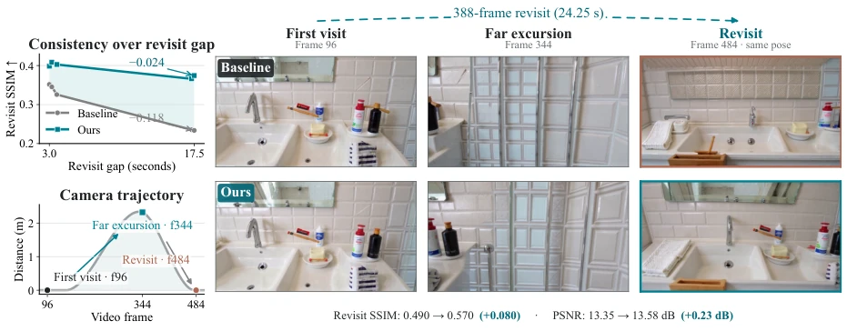
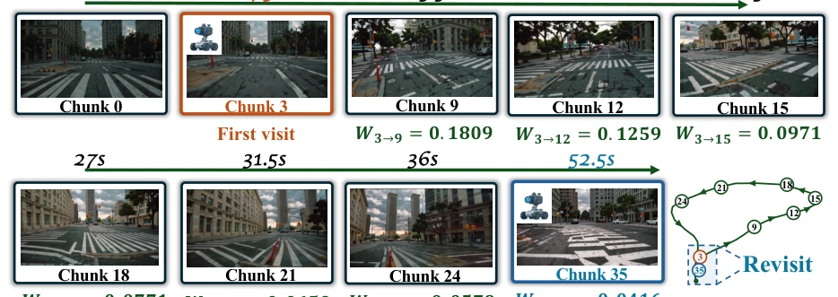
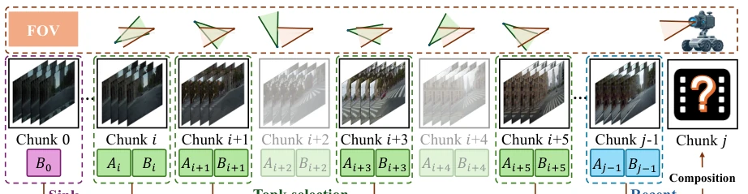
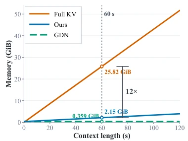
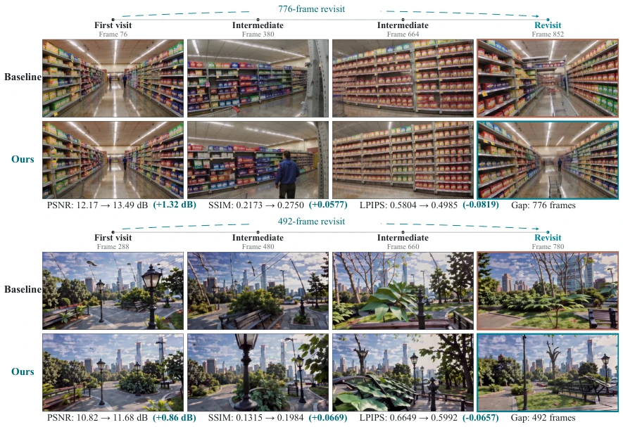
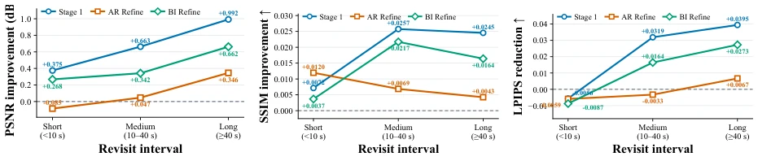
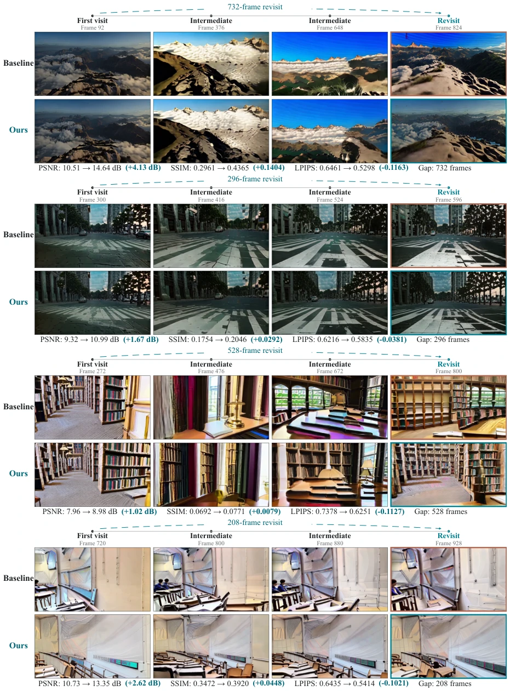
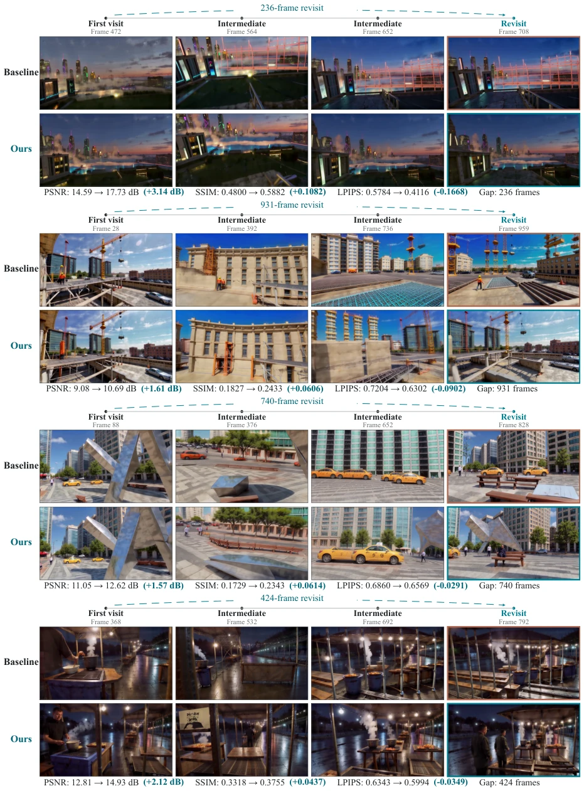
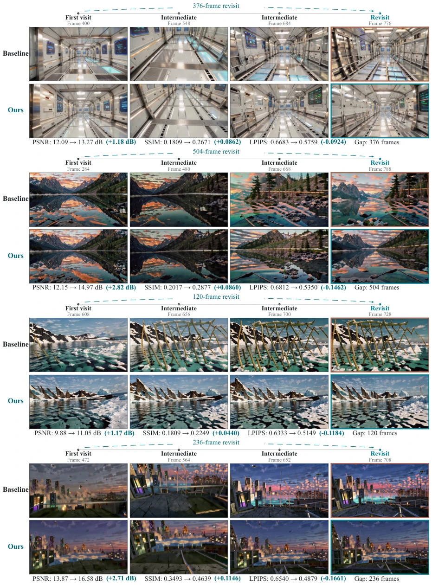

This paper proposes a "memory patch" for long-horizon video world models. Although linear attention such as GDN saves memory, it is like a goldfish; it forgets what it has just seen upon returning, causing scene consistency to collapse. The authors did not perform large model fine-tuning, but instead implemented a hybrid architecture of "Geometry Navigation + State Recomposition". The benefit is a 12x reduction in VRAM usage with improved performance; the drawback is that retrieval relies entirely on camera poses, which may fail if objects in the scene are occluded or semantics are complex. Overall, it strikes a good balance between efficiency and long-term memory, but the benefit of "free training" may come at a cost, as guessing knowledge not learned always carries risk.
Long-horizon simulation requires persistent memory, yet full history KV caches expand infinitely with sequence growth [11, 12]. Although recurrent linear attention (e.g., GDN) compresses states, it suffers from severe long-term forgetting problems [15]. As shown in Figure 1, when SANA-WM's camera returns to a previous scene, continuous transformations of irrelevant intermediate states cause early information attenuation and scene structure drift. Existing methods like Relic [9] or Matrix-game [3] mostly rely on frame-level or feature-level memory, incurring high retrieval costs. The core contradiction is: how to enable recurrent models to "selectively" recall distant yet relevant scene information without increasing training costs, instead of uniformly propagating all historical states.

Figure 1 Long-range forgetting in GDN-based world-model rollouts. Upper left: Revisit SSIM over increasing temporal gaps. Lower left: Camera displacement along the qualitative trajectory. Right: Qualitative comparison of the first visit, far excursion, and revisit at the similar camera pose. After the long excursion, the baseline SANA-WM shows noticeable changes in scene layout and object arrangement, whereas our HLA-WM better preserves the first-visit scene content.

Figure 2 Long-range forgetting in GDN. The camera follows a long loop and eventually returns near the region observed at Chunk 3 around Chunk 35. We visualize representative generated chunks along the trajectory together with the cumulative retention W3→j of Chunk 3. Although the early scene becomes relevant again near the end of the rollout, its retained influence continuously decreases as intermediate chunks are generated, reaching only 0.0416 at Chunk 35.
HLA-WM chunks the generation sequence, caching affine transformation summaries $(A_i, B_i)$ of GDN per chunk rather than token-level KV. During inference, camera pose, intrinsics, and depth estimation are utilized to calculate frustum overlap, retrieving history chunks geometrically relevant to the current viewpoint. Subsequently, selected summaries are reassembled in chronological order to construct query-specific recurrent states, bypassing transformations of irrelevant intermediate chunks. Specifically includes: 1) Chunk-wise GDN Memory: Aggregating token-level updates into chunk-level affine transformations, leveraging associativity to support lossless reassembly [15]; 2) Geometry-Guided Retrieval: Filtering history chunks based on FOV overlap score $R(i, q)$, requiring no semantic features, retaining the first chunk as Sink to maintain global context; 3) Selective State Recomposition: Utilizing associativity to directly calculate $S_{hist}$, updating only the main GDN state while keeping the local convolution state unchanged. This design is completed within a single forward pass without replaying visual tokens, significantly reducing computational overhead.

Figure 3 Overview of HLA-WM. Historical video chunks are represented by independent GDN summaries. Given the current query, geometry-guided retrieval selects scene-relevant historical chunks together with persistent sink and recent context. The selected summaries are then composed in chronological order to construct a query-specific recurrent state.
Evaluated on SANA-WM-Bench and MBench-A, with a baseline of 1.6B SANA-WM. Metrics encompass revisit consistency (PSNR/SSIM/LPIPS) and camera control (RotErr/TransErr). Table 1 results show that under Stage-1, HLA-WM improved PSNR by 0.74dB on Hard trajectories and reduced rotation error by 26%. Figure 4 indicates that 60s context requires only 2.15 GiB VRAM, 12 times less than full KV. Ablation studies (Table 3) demonstrate that both Sink memory and geometric retrieval are critical. Despite requiring no training, performance remains robust after AR or bidirectional refinement, validating the generalization of the long-term memory mechanism. Figure 5 presents a comparison of revisit consistency for indoor and outdoor scenes, where the baseline exhibits structure drift while HLA-WM maintains geometric stability.

Figure 4 Memory scaling comparison.

Figure 5 Qualitative comparison on long-range revisit scenarios under causal AR refinement (top) and bidirectional refinement (bottom). Each example shows the first visit, intermediate views, and a later revisit along the same camera trajectory. Revisit metrics are computed between the first-visit and revisit frames within each method.
其他图片Other Figures

Figure 6 Performance improvement over SANA-WM across different revisit intervals on the Hard-Trajectory split. We report PSNR improvement (left), SSIM improvement (middle), and LPIPS reduction (right) for Stage 1, AR refinement, and bidirectional refinement.

Figure 7 Additional qualitative comparisons for Stage 1 outputs. Each example shows the first visit, two intermediate views, and a later revisit along the same camera trajectory. Revisit consistency is evaluated between the first-visit and revisit frames within each method.

Figure 8 Additional qualitative comparisons under causal AR refinement. Each example shows the first visit, two intermediate views, and a later revisit along the same camera trajectory. Revisit consistency is evaluated between the first-visit and revisit frames within each method.

Figure 9 Additional qualitative comparisons under bidirectional refinement. Each example shows the first visit, two intermediate views, and a later revisit along the same camera trajectory. Revisit consistency is evaluated between the first-visit and revisit frames within each method.